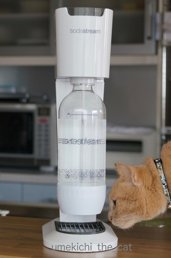
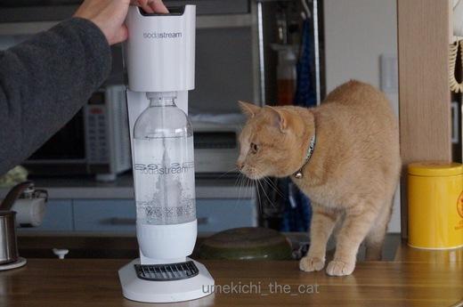

炭酸音にビビる梅吉 [梅吉]
自宅で簡単に炭酸水を作ることができるソーダメーカーを買いました。

早速チェックにやって来た梅吉さん。

炭酸ガスの入った専用シリンダーを本体にセット。
ボトルにお水を入れ本体にセットして
上のボタンをお好みの回数押したら炭酸水の出来上がり〜。
では、梅吉さんボタンを押しますよ。ふふふ・・・・

ブシュ〜〜〜〜！！！

ブ〜ブ〜ッ（出来上がりの合図音です。）


使い始めて一週間。初回ほどではありませんが
未だにガスがブシュブシュする音にビビって遠巻きに見つめる梅吉。
幼い頃は怖いもの知らず過ぎて何かにびっくりして逃げる・・・なんてことはなかったのですが
大人になって猫ごころがついて来たのでしょうか。
大きな物音に逃げることが度々見受けられるようになりました。
工事の音、雷音などなど・・・・
逃げる先は寝室のベッドの下かテレビの裏。
決して「おか〜さ〜ん！」と走り寄っては来てくれません・・・^^;
･゜ﾟ･*:.｡..｡.:*･゜ﾟ･*:.｡. .｡.:*･゜ﾟ･*･゜ﾟ･*:.｡..｡.:*･゜ﾟ･*:.｡..｡.:*･゜ﾟ･*
炭酸水メーカーは1〜2年前にもおっとが買いたいと言ったことがあったのですが
「ペットボトルの買えば良いじゃない。」と即座に却下。
時を経て再チャレンジして来たおっとのセールストーク（笑）は
「炭酸水って美容にもいいんだってね！」でした。
確かに数年前から美容業界では炭酸パックなどスキンケアにも取り入れられているし
私の通っている美容室では炭酸水シャンプーをしてくれます。
炭酸水シャンプーに関して言えば、シャンプーのすすぎを炭酸水でするのですが
毛穴の汚れをきちんと落として毛根を活性化して元気な髪を育てましょう！
という触れ込みでした。
炭酸水ですすぎ始めてから２年ほど経ちましたが
月に一度のケアとはいえ髪が元気になってきています。
年齢とともに目立つようになったちぢれた様な生え方をする髪も
ほとんど気にならなくなりました。
「お顔に炭酸水パックが出来るよ！」というおっとの言葉に
美活に弱い私はあっさり買うことを承諾しましたよ〜。
炭酸ガスのボトルは交換式なのでペットボトルや缶ゴミを減らす事にも成功。
糖質制限ダイエット中のおっとはビールに変えてハイボールをつくる為
私は美活のためと、梅吉にはドキドキですが炭酸水生活しばらく続きそうです。
ダイニングテーブルに映る梅吉のお顔。
逆さ富士、ならぬ逆さ梅吉

カフェオレ色の梅吉

梅吉 2023年8月10日 永眠


梅吉と出会った譲渡会

犬猫の理由なき殺処分ゼロ
妄想広告
UMEKICHI 光

爆発的に早い！
時々攻撃的！
Thanks to Mr.Boss365
爆発的に早い！
時々攻撃的！
Thanks to Mr.Boss365

梅吉さん、めちゃくちゃびびってますねぇ^^;
うちはノエルが音に敏感すぎてすぐに警戒警報を発令してアルとニケに伝染して大騒ぎになります(*_*)
大御所だけは「？」って表情で我関せずですｗ→大物なのか、にぶいのかｗ
by ニッキー (2017-04-10 17:55)
梅吉君のビビリ顔！完全に目が泳いでますね！
大きくなるにつれて、ますます耳の感度もよくなって、大きな音は更に大きく聞こえたりするのかしら？
逆さ梅吉君、絶景かな！
by BillK-ko (2017-04-10 20:15)
梅吉さん、逃げ足早い(*^▽^*)
君子危うきに近寄らずが長生きの秘訣にゃ！と我が家のビビり猫が主張しております^^;
逆さ梅吉さん、目がつながって背中合わせの三日月みたい♪
お膝でお寛ぎですね！
by ゆきち (2017-04-10 20:44)
梅吉さん、宙に浮いているような（笑）はよ逃げや〜
逆さ梅吉さん、上下合わせても梅吉さんです。
炭酸水、我が家はセブンイレブンで箱買いです。
意外と減りません。
3か月に24本、これからは箱で買う必要ないような（笑）
面倒ですから、頼みますけど。
by kiki (2017-04-10 21:36)
梅吉さん♪
興味津々から一転、のけぞっていますね(;^_^A
これからも大活躍してくれるでしょうから
早く慣れてくれますように♪
逆さ梅吉さん♪
ご利益がありそうです(#^.^#)
by きぃ (2017-04-10 22:04)
興味津々ですねー。
でも、テーブルにドリフト痕が出来ちゃうかも！？ ^^;
by yes_hama (2017-04-10 22:08)
おおーｗｗ
めっちゃビビってますねぇ!!
でも、気になるねヾ(*´∀｀*)ﾉ
by sumi-cyan (2017-04-11 01:52)
うちも自宅で炭酸水つくってますよー
毎日飲んでます^^
最初は２にゃんもビックリして逃げていったけど
さすがに数年経った今は、すぐ側でプシュー！ってやっても平気です。
夜寝る前に飲むのですが、どうしても余っちゃうので
朝の洗顔に残りの炭酸水使いますよ。
しゅわしゅわ気持ちいいよｗｗ
by リュカ (2017-04-11 10:38)
梅ちゃん、好奇心いっぱいの男の子なのですねー♪
いい表情だわ～。
いつも行くフィットネスの湯船のひとつが炭酸風呂で、こちらだけぎっしり混んでます！
by Ginger (2017-04-11 13:05)
ニッキーさん＞ノエルさんは怖い物が分かっているけれど
アルさんニケさんは雰囲気で騒いじゃうんですよね〜。
ずだだだだだだーっと走る様子、目に浮かびます。かわいいなぁ・・・・・
大御所様は、さすが！です（＾◇＾）
BillK-koさん＞幼いときは「この子どこかの感覚麻痺している？」と
思ったものですが梅吉も普通のビビリ猫になりました＾＾
逆さ梅吉はこの後お鼻梅干し（早速使ってみる！）の月が出ましたよ！
梅吉のお鼻梅干し（しつこい）は塩分控えめの浅漬けタイプ。
はちみつプラスという感じの色合いで〜す。
ゆきちさん＞こてつせんぱいのめいげん、こころにとめておくで。
と梅吉が申しておりましたm(_ _)m
逆さ梅吉はご賢察の通りおっとのお膝の上です。
おっとが家にいるとあまり私の膝に上がって来ません。
家人へのポイント（なんのだ？笑）は平等に振り分ける様にしている様です＾＾
kikiさん＞本当に宙に浮く様に、飛ぶ様に逃げて行きました＾＾
逃げ足は天下一品なんですよ！
炭酸水等水物は重いですから宅配に限りますよね〜。
我が家は宅配物が多い家なので炭酸水の届け物を減らすことで
宅配業者さんの心象が少しは良くなるかな・・・・と^^;
「宅配、少し遠慮しようよ！」という空気を感じる昨今、
ちょっと後ろめたい気もしているのです。
きぃさん＞のけぞって腰が完全に引けていましたよ〜（＾◇＾）
梅吉のことだからすぐに慣れると思いま〜す。
yes_hamaさん＞ドリフト痕・・・はぁ〜（ためいき）
もう、どこにできても驚かないしリカバリーしようとも思わなくなりました。
猫飼いとして達観して来ました！
sumi-cyanさん＞そうそう、怖いけれど気になるんですよね〜。
なんだかんだ言っても近くに寄って行っているしww
リュカさん＞炭酸水先輩！梅吉もすぐに慣れそうだわ。
もともと肝っ玉は座っている方だしねww
先日強炭酸を作ってすぐにお風呂に持ち込んで洗顔したのですが
炭酸が強かったのか目の周りにしゅわしゅわっと来てちょっとびっくり^^;
でも気持ち良かった〜。
Gingerさん＞そうなんです＾＾梅吉は何にでも興味津々。
全てにもれなく参加するにゃんこなんですよ。やじ猫とも言われています・・・
炭酸風呂、work out後の筋肉に程よい刺激があって気持ち良さそう！
手足をわ〜っと伸ばしたいところですが混んでいるのですね。残念！！
by ちぃ (2017-04-11 14:39)
あはは
梅吉さんの顔サイコー！
炭酸マシーン、コスパ的にどうなんですかね？
by じゅらまろ (2017-04-11 16:12)
炭酸水の美容効果をレポート願います。
逆さ梅吉くん。不思議な絵が撮れましたね(*^^*)
by palpal (2017-04-11 16:20)
おお！すごいびっくりしていますね！
興味津々で近づいたた音がなったらびっくりしますね！
by みぃにゃん (2017-04-11 22:19)
じゅらまろさん＞炭酸ガスのシリンダーが初回購入で3500円くらい。
次回以降は交換になるので2000円くらい。
これがどのくらい持つかですね〜。
調子に乗ってどんどん使っているからあっという間になくなって
炭酸水買ったほうが安くない？となる可能性もありよ〜^^;
ただこの装置は水だけじゃなくて液体になら何でも炭酸注入可。
ワイン、日本酒なんかに入れて楽しむこともできるのよ♪
割高になっちゃたらお楽しみの料金プラスってことにします。
palpalさん＞主にお顔への効果ですね！了解です•̀.̫•́✧
ただ、おばちゃんだから効果出るの遅いかもよ〜。
みぃにゃんさん＞なんでも迂闊に近づいてはいけない！と
教訓にして欲しいと思ったのですが・・・・無理だった〜^^;
by ちぃ (2017-04-12 15:04)
旦那様ナイスセールストークですね( ´艸｀)
女は美活に弱い！良く心得ていますね＾＾
にゃんでもチェックしたがるにゃんこ
梅吉さんの姿が目に浮かびます。
by Moon (2017-04-13 08:52)